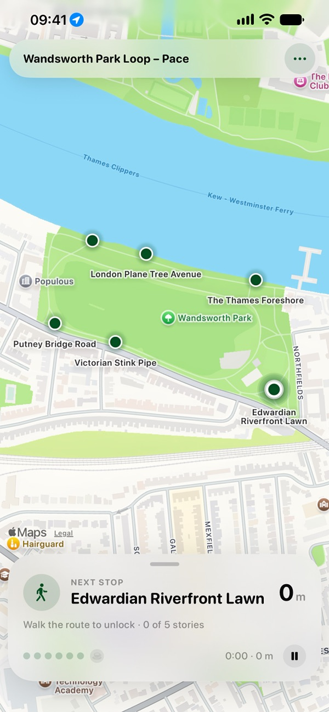
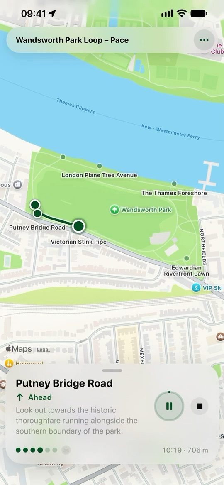
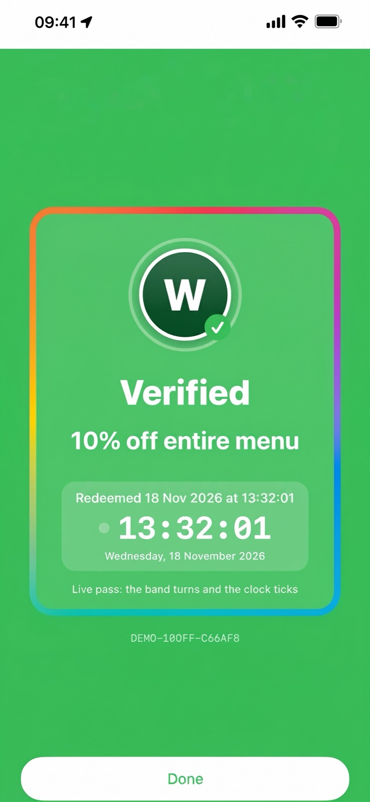
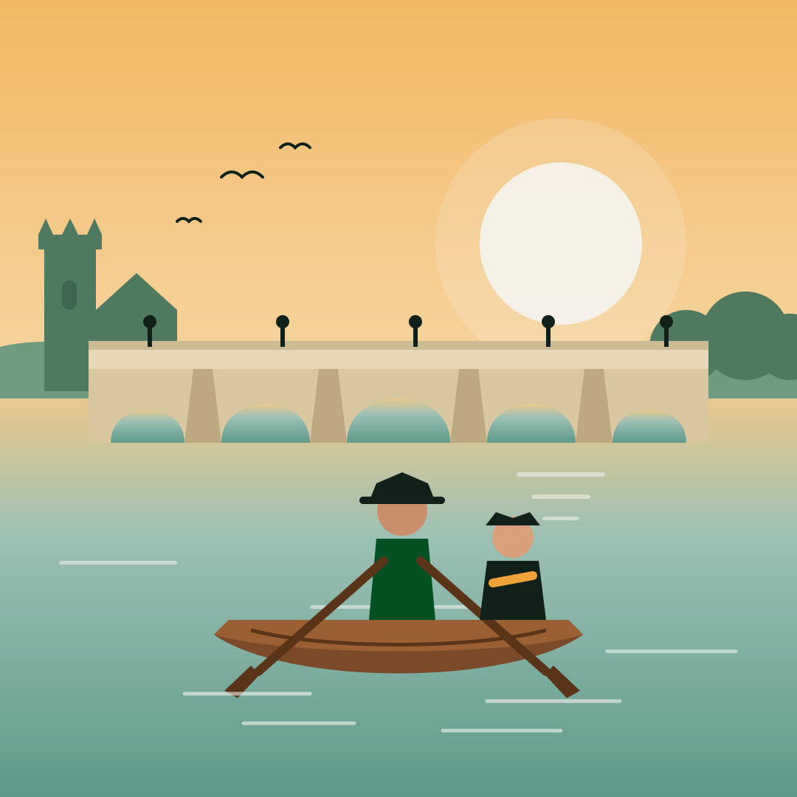
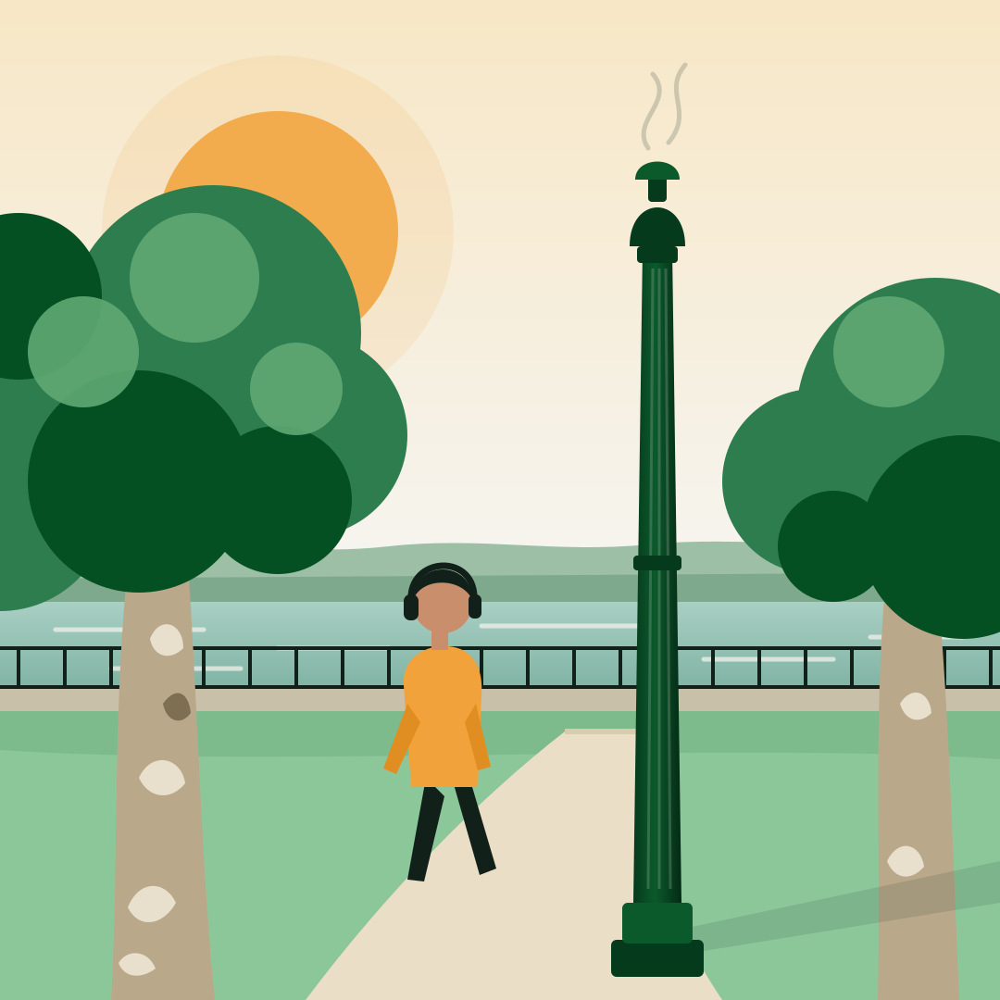
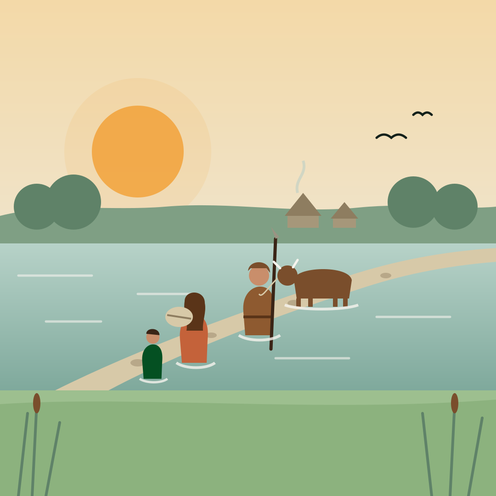
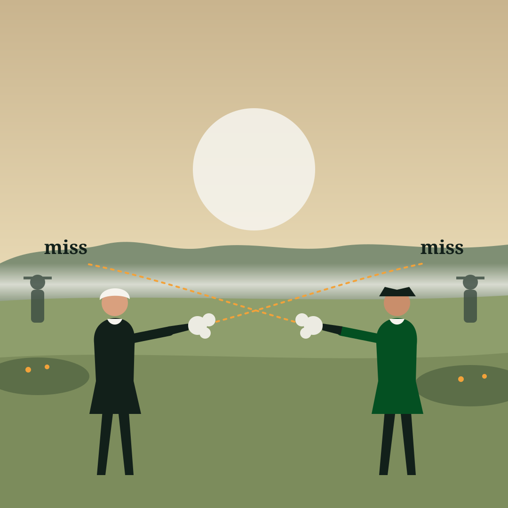
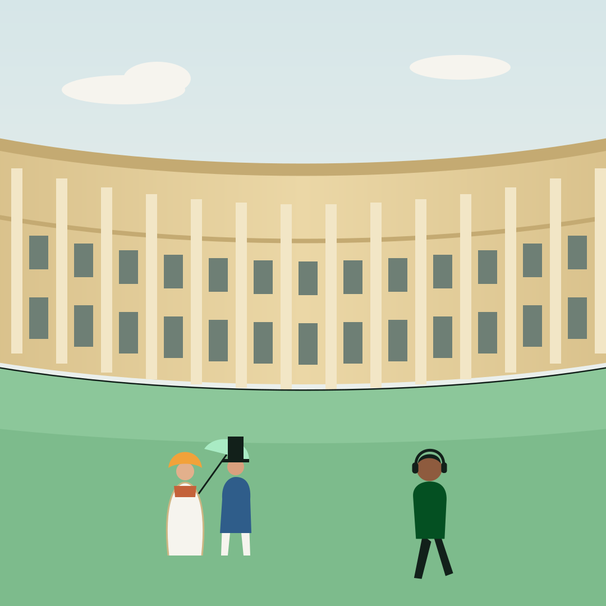
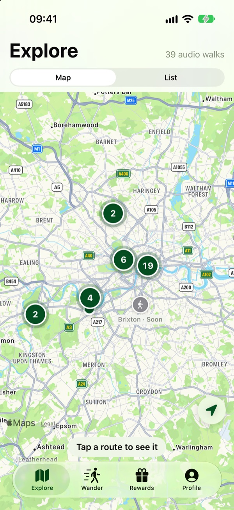
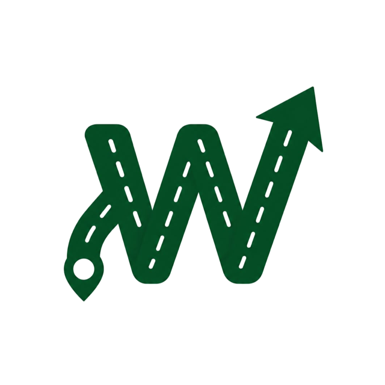

Your daily walk, upgraded.
Keep your Spotify or podcasts playing. WayShift slips 25-second local stories into your headphones as you pass landmarks, then unlocks a VIP coffee perk at an independent café at the end.
WayShift in 30 seconds.
How it works
Walk with your own music
Headphones in, phone in your pocket. Play whatever you like.

Hear 25-second stories at landmarks
Reach a spot and a short story tells you where to look and what happened there.

Unlock a 48-hour VIP pass
By the end of your walk you've earned a pass for an independent café on the route. Swipe to redeem at the counter.

Ever wondered what you're walking past?
A few of the stories waiting on the walks.

The bridge a Prime Minister built out of spite
Putney, London
Why that iron pole isn't a lamp post
Wandsworth, LondonThe day Brunel got stuck in a basket 250 feet above the gorge
Clifton, Bristol
The winter a Viking army camped on the Thames
Thames Path, Putney
The Prime Minister who fought a pistol duel on the heath
Putney Heath, London
Where Jane Austen set her most romantic reunion
Gravel Walk, Bath
Also on the walks: the police chase that turned Banksy to stencils, the Romans who posted curses into a hot spring, and one of only four bridges in the world lined with shops.
Live in London, Bristol and Bath.
Walks in all three cities are built and ready to try in the beta.
- LondonFrom Wandsworth Park and Putney to Soho and St James's.
- BristolHarbourside legends, Brunel and street art.
- BathRoman springs, Georgian crescents and Jane Austen.

Run an independent café?
Put your café at the end of a WayShift walk, and walkers arrive with a pass to spend.

Walk it first.
WayShift is in beta on iPhone. Email us and we'll send you an invite.